IS445 Project
1 Getting Started
1.1 Installing the R and R Studio
While there is a link for you to access the Shiny Application, it is recommended that you run to the R application locally, as the Shiny Webpage does not provide enough resources to run all the features of the application. This is especially so if you wish to build your own model.
The instructions to install R and R Studio can be found here.
1.2 Installing the proper packages
You can install all the relevant packages that is needed for Shiny App on R Studio. While there are quite a lot of packages to install, pacman should be prioritized to ensure the easy installation of the rest of the packages.
To Install the packages, Go to the tools sections, click on Install Packages. And insert the name pacman to install the correct packages.
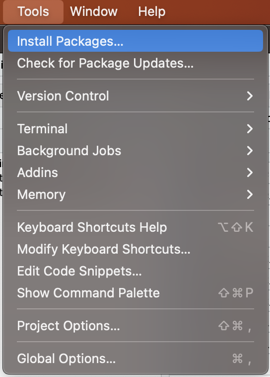
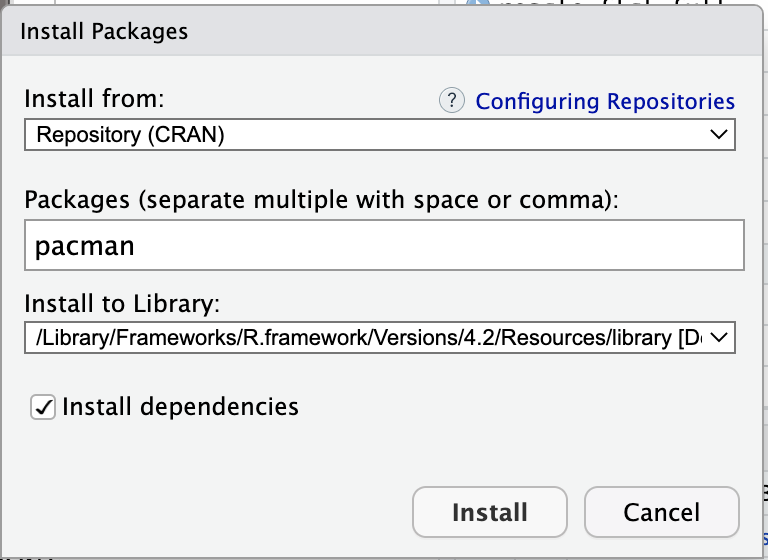
You should be ready to run all the application.
2 Preprocessing the Data
The Shiny Application by itself cannot perform Pre processing by itself. However all the steps have been given to you already in the Data Pre processing Tab. All you need to do is just to follow all the steps in order to prepare the data.
All you need to do is to pre processed the data. The Building Model Section is integrated into the Shiny App already.
3 Starting the Shiny App
To start the Shiny App, you will need to download our GitHub Repository first. Once you have extracted all the folder. All you need to do is to navigate to the Folder Shiny_App. Run either server.R and ui.R on R Studio and it will start up the Shiny App.
Congratulation, you have started our shiny app.
Alternative, you can visit our link here for a hosted shiny app.
4 Navigating through the Shiny App
When starting up the our Shiny App you will be greeted with our Home Page.
4.1 Home Page
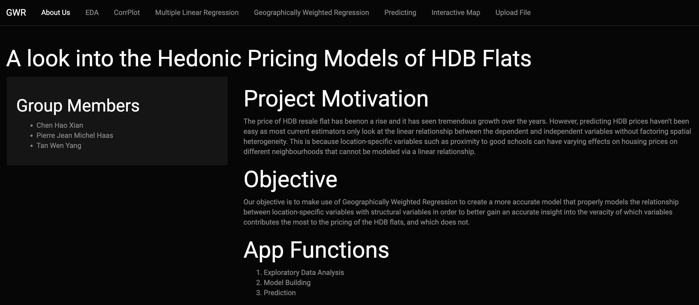
You can navigate to the different sections from the navigation bar above.
In General, the way you want to navigate through the application is from the left to right, with the only exception being the Upload you own data.
4.2 Upload File
Please read the Disclaimer on what is expected.
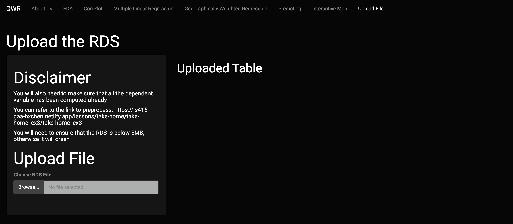
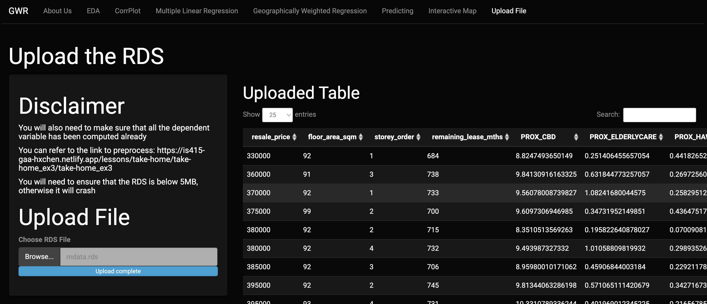
Congratulation now the shiny app will be using this new file for the rest of the shiny application.
4.2.1 Troubleshooting
4.2.1.1 I have uploaded a Table successfully but the rest of the Shiny App is not working
You have successfully uploaded the Table but when you enter the EDA tab you are greeted with this error. This mean that the data uploaded is not correct. You need to follow the pre processing tab closely in order to ensure that app will feed.
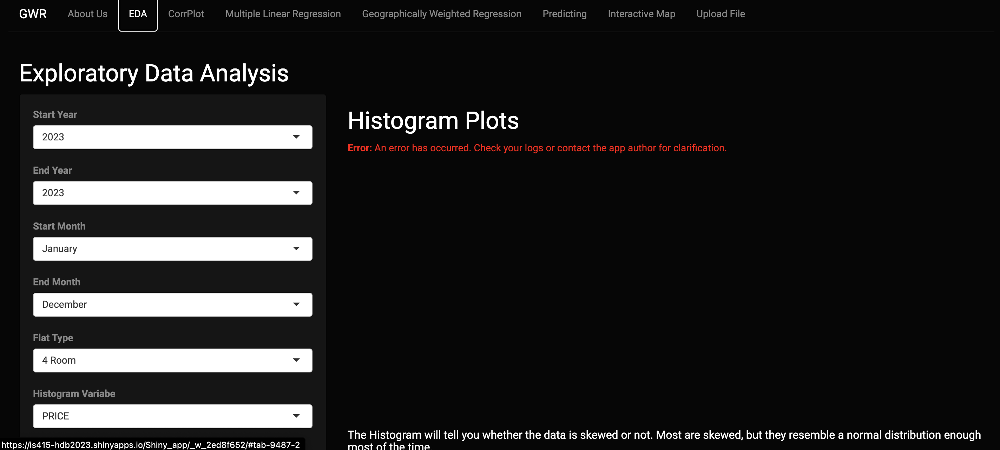
4.2.1.2 Uploaded File but No Table is shown.
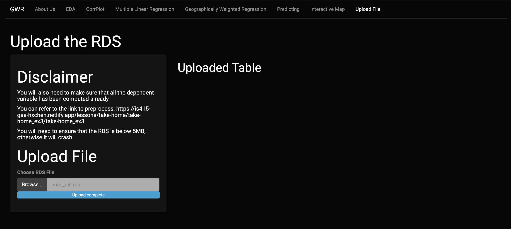
The RDS file you uploaded is not a table.
4.2.2 Uploaded File Size Exceeded
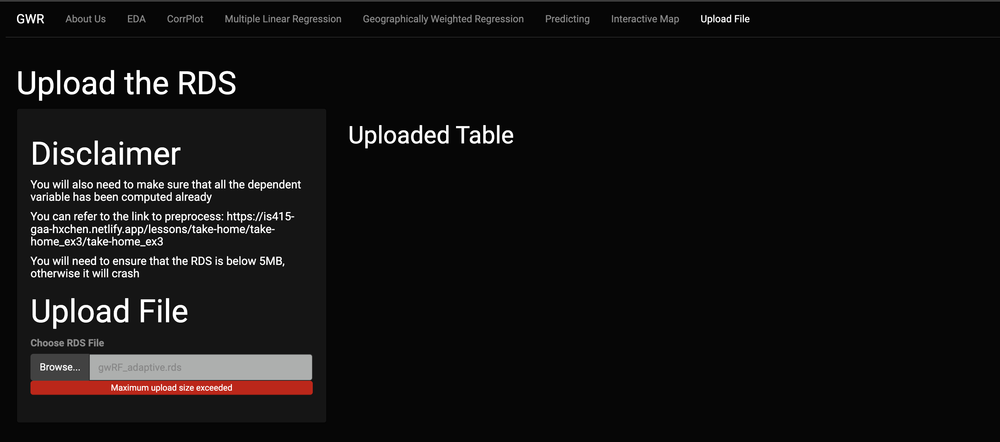
The RDS File is too big. Due to the limitations of the shiny app it can only receive RDS file that is 5MB and below.
4.3 EDA
This section will show you the critical information of the given data set. All the plots here are dynamic and will update according to the new information given. This section is supposed to highlight more insights about the data before the model is build.
Adjusting the filters here will have an effect on the model building.
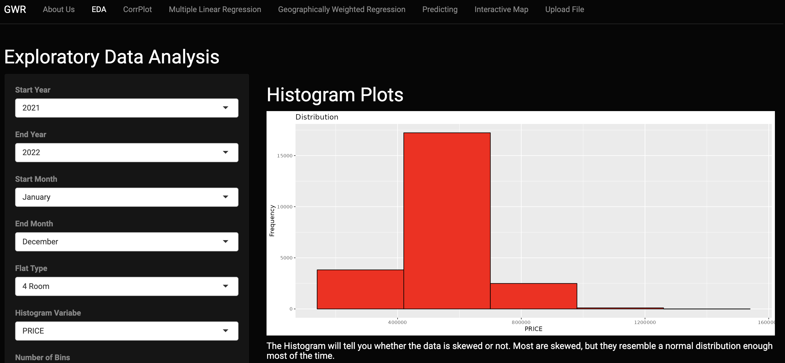
4.4 CorrPlot
The Correlation Plot will need to be done before we build our model. The Correlation Plot is Reactive, meaning that it changes based on the columns of the data given to it. You will need to reference this page again when building your model.
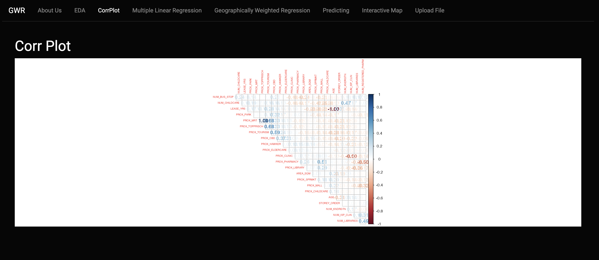
4.5 Multiple Linear Regression
In This tab the multiple Linear Regression is build here. You can defined what variables you want to add to the model and what variables you want to. Test are also provided to test the accuracy of the model. With the exception of the Moran I Values, all the other variables are reactive.
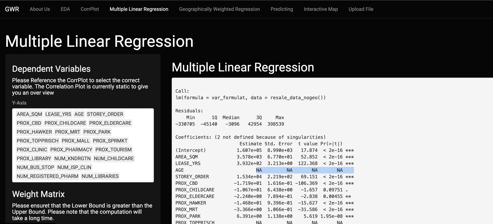
If the Correlation Plot is not clear enough, highly correlated Attributes will be displayed as NA in the Linear Regression Plot.
4.5.1 Computing Moran I
To Compute Moran I, you will need to set the variables of the Weight Matrix.
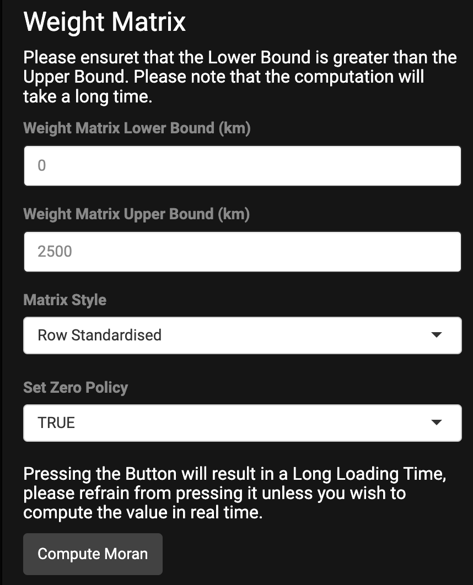
Pressing on Compute Moran will result in the Moran I being calculated in Real Time. Please note that this might take some time to generate a result.

4.6 Geographically Weighted Linear Regression
In this tab, a pre calculated model of GWR Model is being displayed. All the Dependent variable should already have been selected in the Multiple Linear Regression Tab.
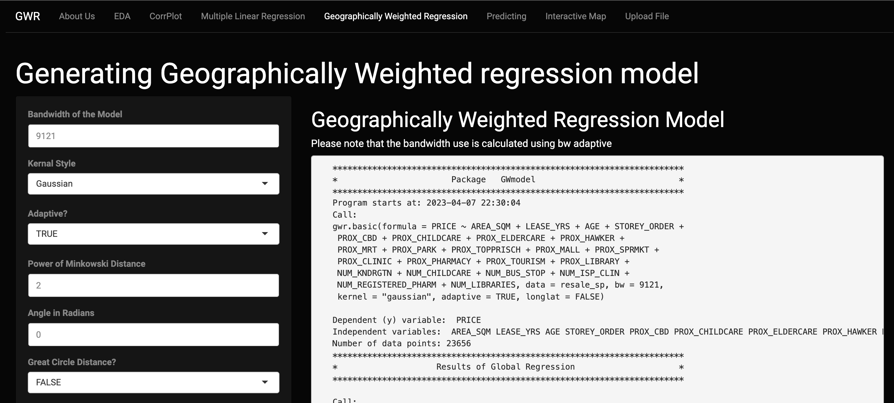
If you wish to generate your own model, all you need to do is to tune the given parameters. You can choose to generate GWR from the given parameters or calculate an adaptive bandwidth.
Note that doing either will result in a long loading time.
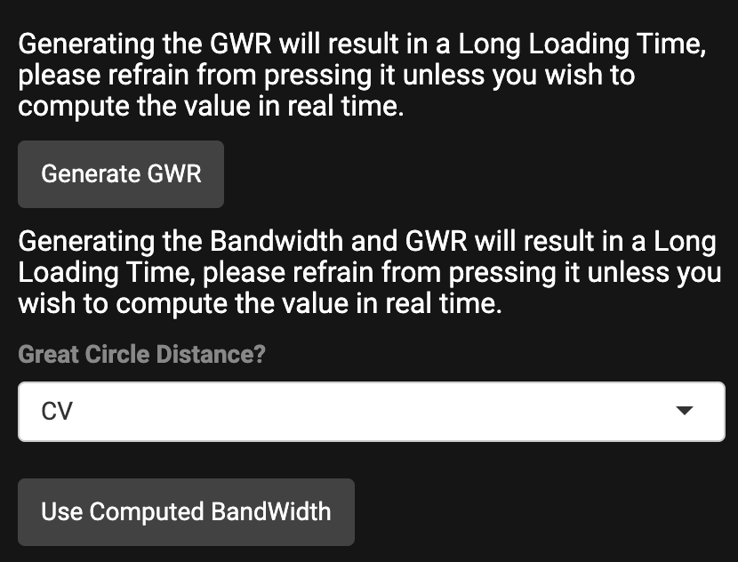
4.7 Predicting the HDB Price.
In this tab, the user can predict the HDB Prices. You can use either of the models Multiple Linear Regression or the Geographically Weighted Regression.
For Multiple Linear Regression you can just input the value based on the model that you have build. Please follow order given. The values that are input should be given separated by a comma.
For Geographically Weighted Regression, please upload a Spatial Data frame for it to predict. However, prediction for this model will build an entirely new model to predict the values. This will take even longer to load the results out.
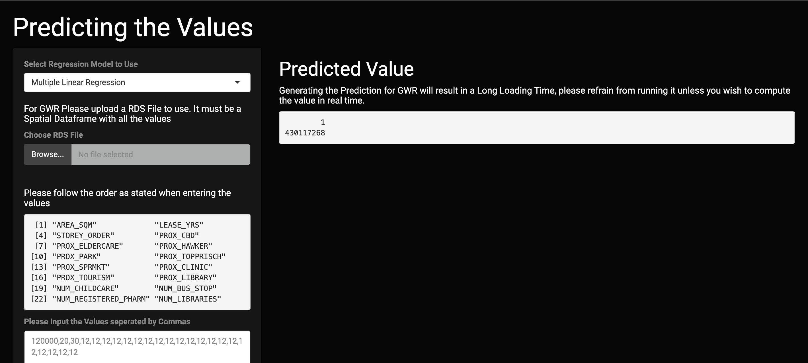
4.8 Interactive Map
You can view an interactive map of all the data points. Find out where the HDB is and how the range of the price in this map. To prevent tmap from crashing in the shiny app, we have limited the maximum amount of points that will be displayed. Tmap is interactive and you can alter the variables
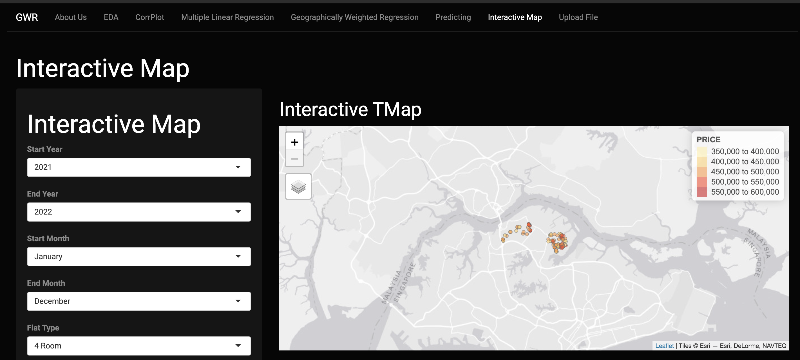